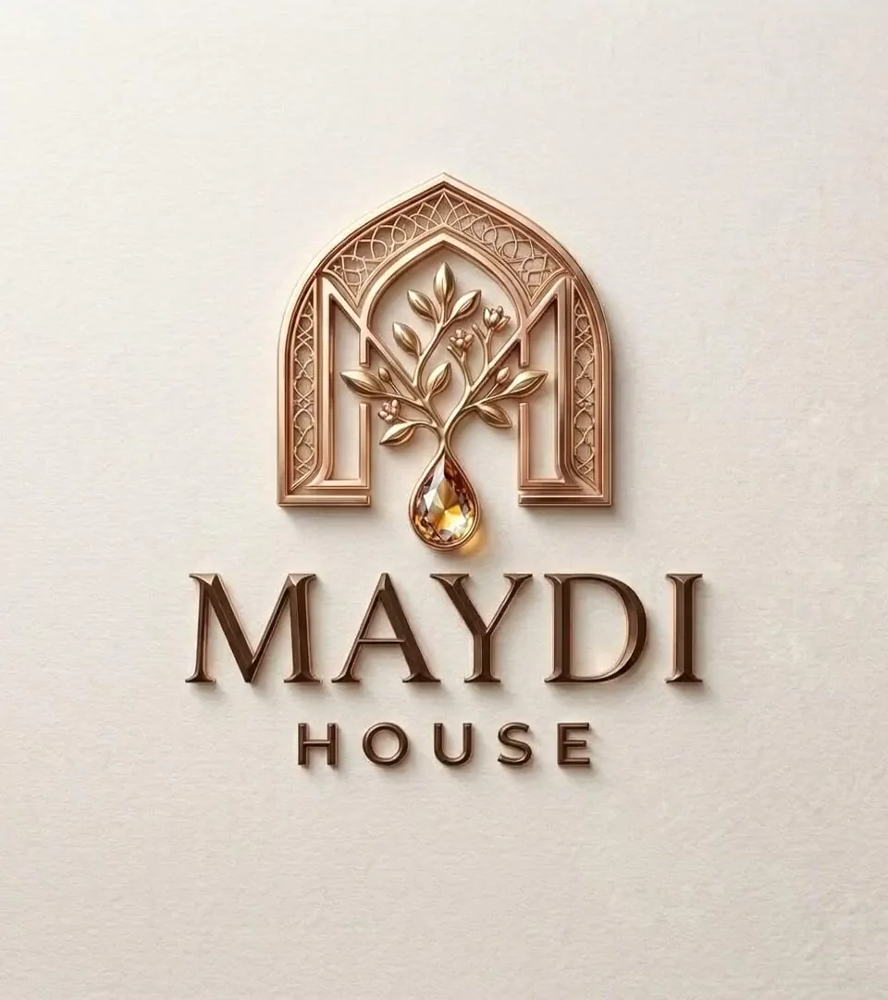

01
MAYDI ATELIER
Bespoke perfume design and custom fragrance development.
تصميم العطور وتطوير التركيبات العطرية حسب الطلب
Start a projectA Somali fragrance house, named after Maydi, the most prized frankincense in the world.
دار عطور صومالية فاخرة، تحمل اسم أثمن لبان في العالم


Maydi House was founded in Mogadishu by Mohamed Abdo, a Somali perfume designer who trained through courses in perfume design.
He has created original compositions, worked with perfume houses across the Arab Gulf, and consults on fragrance innovation. The house carries his signature: inventive, with a classic character.
Each house serves a different partner. All of them begin with Somali land.
أقسام مايدي هاوس
Bespoke perfume design and custom fragrance development.
تصميم العطور وتطوير التركيبات العطرية حسب الطلب
Start a projectPerfume manufacturing, filling and private-label production.
تصنيع العطور وتعبئتها وإنتاجها لحساب العلامات التجارية
Under construction · Register interestPerfumes from other houses that Mohamed Abdo has tried and recommends.
عطور من دور أخرى يرشحها محمد عبده
See the pickRare Somali frankincense, myrrh, resins and natural aromatic oils.
اللبان والمر والراتنجات والزيوت العطرية الطبيعية النادرة من الصومال
Order raw materialsEvery house carries the name of the most prized frankincense on earth.
Boswellia frereana
Maydi grows on one tree, on the limestone cliffs of northern Somalia.
Its bark peels like paper.
A shallow cut, and the resin weeps.
It dries into tears in the air, then it is sorted by hand.


Licensed by the Municipality of Mogadishu, and authenticated by the Somali Ministry of Foreign Affairs and the Benadir Regional Governor's Office.
Our identity comes from Somali land and its rare aromatic resources. We do not compromise on it.
Professional design expertise, with a deliberate creative touch.
Clients are partners in building their brands, from the first idea to the market.
The highest standard at every stage, from the raw material to the final product.

مايدي أثمن أنواع اللبان في العالم، ولا ينمو إلا في الصومال